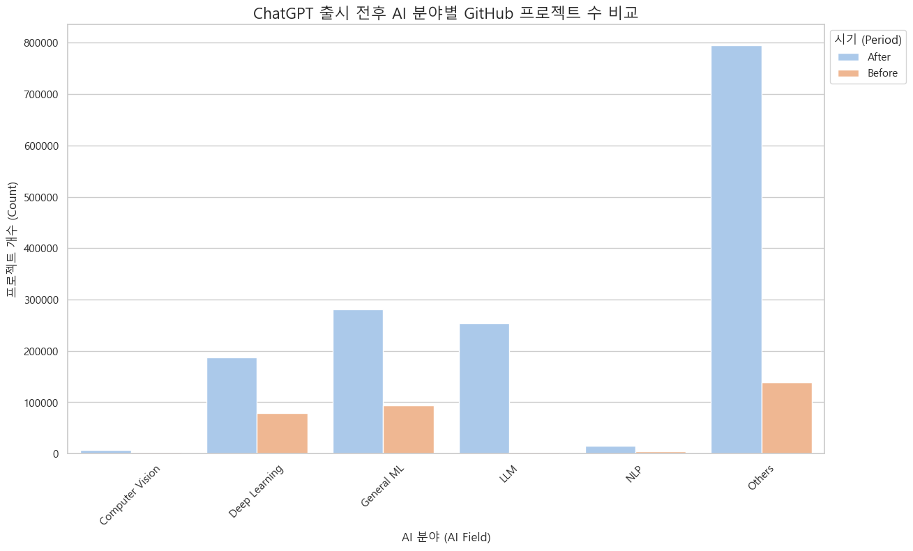
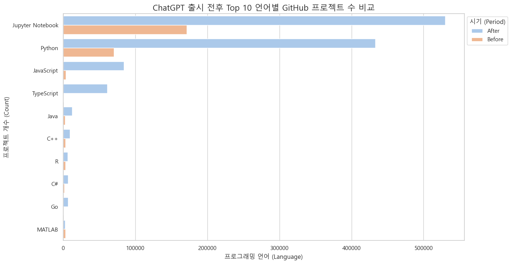
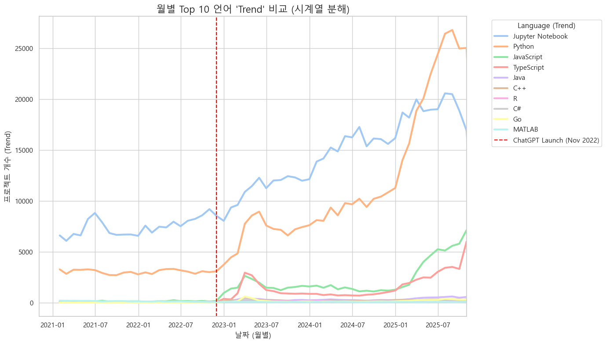
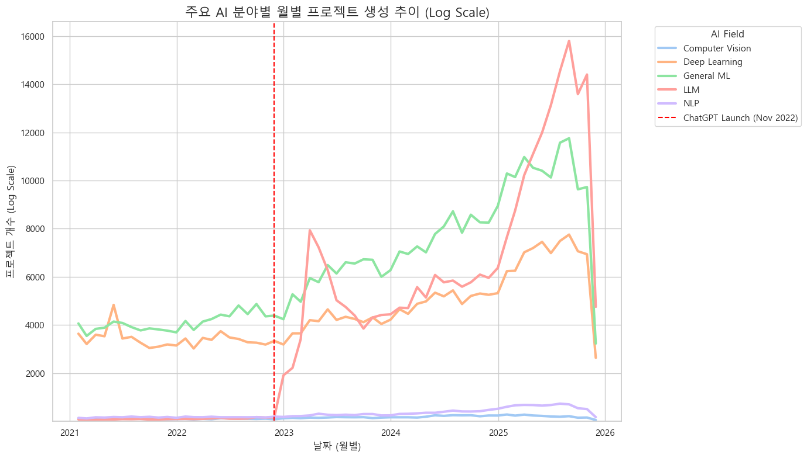
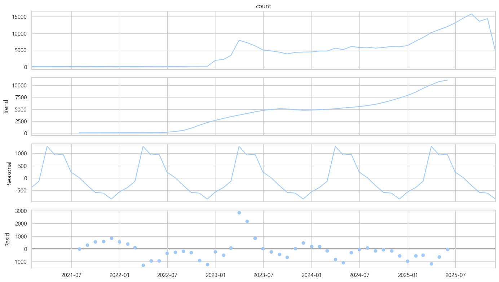
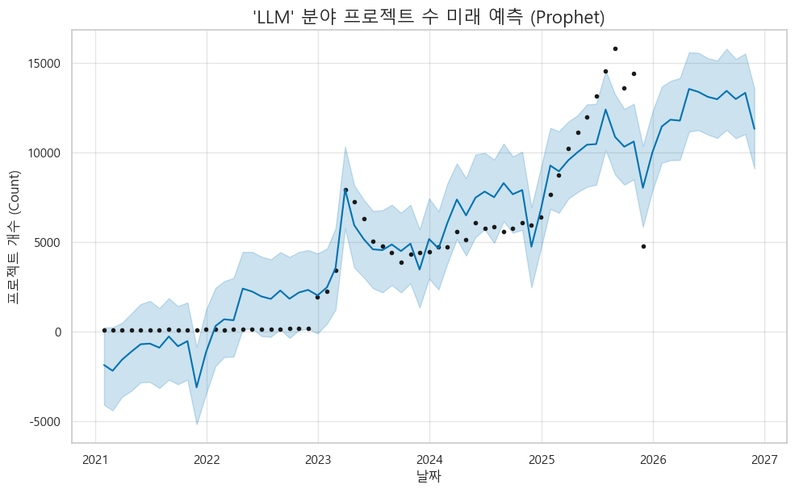
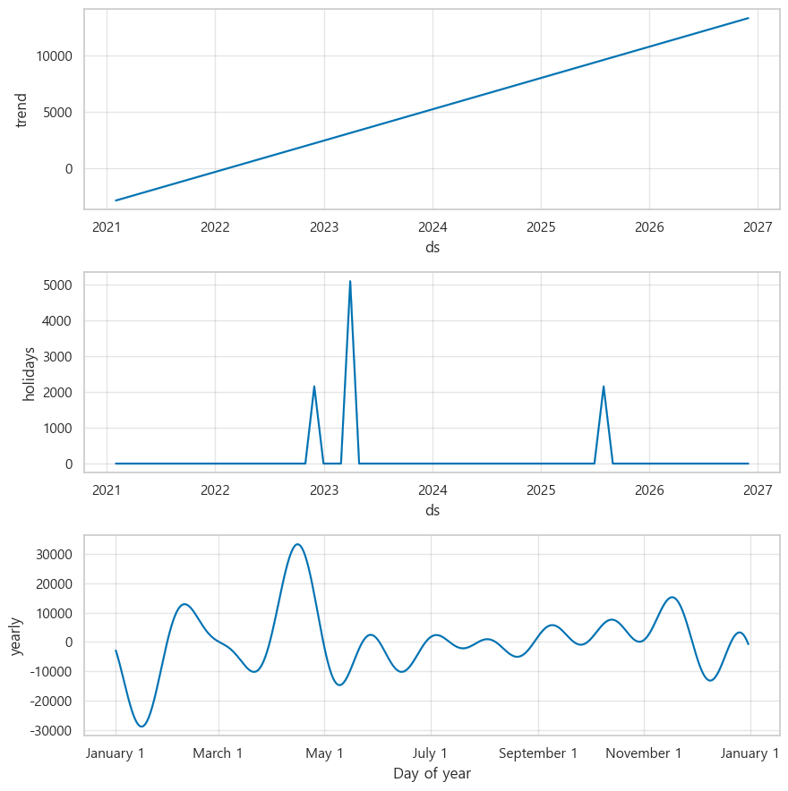
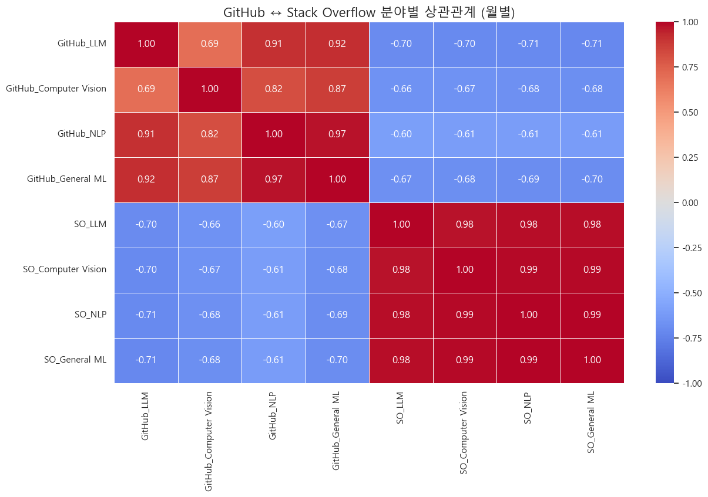
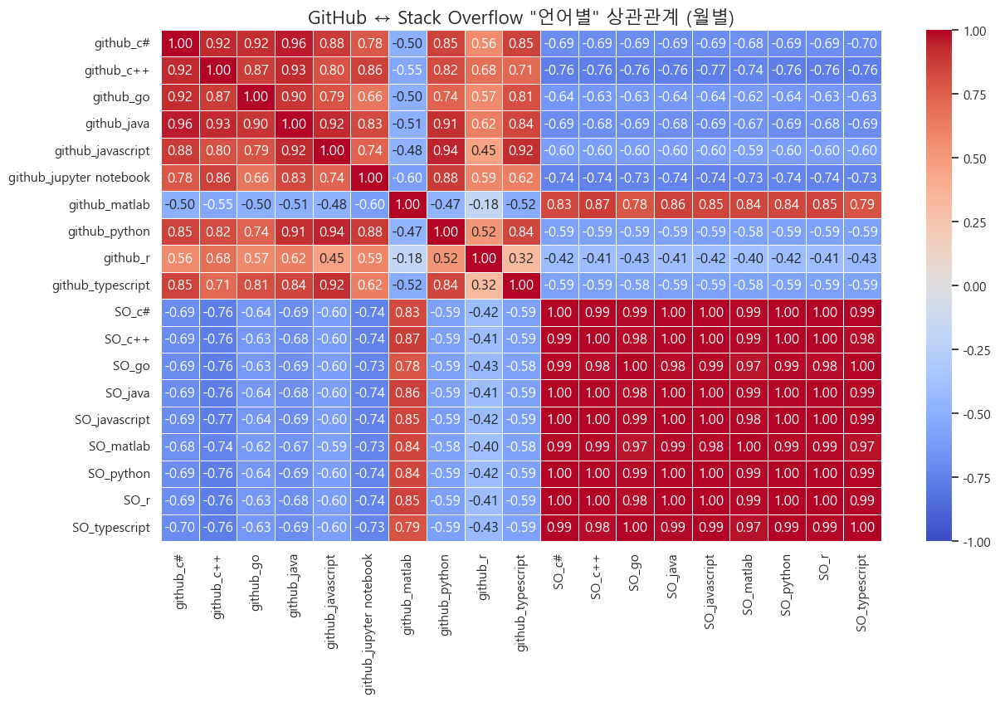

ChatGPT와 Vibe Coding 이후,
개발자 생태계는 어떻게 변했는가?
GitHub · Stack Overflow 데이터 기반 AI 개발 생태계 변화 분석
한양대학교 ERICA 스마트융합공학부 스마트ICT융합전공
데이터 분석 · 팀 프로젝트
데이터 분석 · 팀 프로젝트
Python
Pandas
Prophet
데이터 분석
팀 프로젝트
Abstract
2022년 11월 ChatGPT 출시 이후 소프트웨어 개발 시장이 급격히 변화했습니다. 본 연구는 AI 코드 생성 도구가 개발 시장에 미친 영향을 GitHub와 Stack Overflow 데이터로 분석합니다. GitHub 프로젝트 생성량, 언어별 사용 추세, AI 분야별 성장 패턴을 정량적으로 측정하고, Stack Overflow 질문 수와의 상관관계를 통해 개발자 커뮤니티의 행동 변화를 파악합니다. 시계열 분석과 Prophet 예측 모델을 활용하여 ChatGPT 출시가 촉발한 패러다임 전환을 입증하고, 개발 환경의 미래를 전망합니다.
연구 질문
| RQ | 질문 |
|---|---|
| RQ1 | ChatGPT 출시 전후(2021–2022 vs 2023–2025) GitHub AI 프로젝트는 어떻게 변화했는가? |
| RQ2 | GitHub 레포지토리가 2023년 이후 실제로 증가했는가? |
| RQ3 | AI 분야별(LLM·강화학습·컴퓨터비전·NLP) 프로젝트 증가 양상이 다른가? |
| RQ4 | Stack Overflow 질문 수와 GitHub 프로젝트 수 간 상관관계가 있는가? |
연구 결과 시각화
데이터 분석 결과입니다.

AI 프로젝트 생성량 — 2023년 이후 전 분야 급증, LLM 25만 건 이상 급부상

언어별 프로젝트 수 — Python·Jupyter 1·2위, JS·TS 급증

언어별 트렌드 — 2023년 중반 Python이 Jupyter 추월 (연구→앱 개발)

분야별 성장 추이(Log) — LLM 2023년 초부터 수직 상승

LLM 시계열 분해 — 강한 우상향 추세 + 연간 주기 패턴

Prophet 예측 — ChatGPT·Auto-GPT 이벤트 분리 학습

Prophet 분해 — 이벤트 제거 후 순수 12개월 주기 확인

분야별 상관관계 — GitHub 증가 시 Stack Overflow 질문 감소 (음의 상관)

언어별 상관관계 — 주요 언어 음의 상관, MATLAB만 예외적 양의 상관
Key Findings
- LLM 분야 급부상 · ChatGPT 이후 25만 건 이상으로 폭증, 새 주류 카테고리 형성
- 개발 패러다임 전환 · 2023년 중반 Python이 Jupyter Notebook 추월 (연구→애플리케이션)
- Stack Overflow 역상관 · GitHub 프로젝트 증가 시 질문 감소 (상관계수 -0.70)
- Prophet 예측 · 장기 추세·계절성 분리, ChatGPT/Auto-GPT 이벤트 효과 정량화
Team
| 이름 | 역할 |
|---|---|
| 윤태웅 | PM |
| 원준서 | 데이터 분석 및 시각화 |
| 송민찬 | GitHub 데이터 수집 |
| 이라온 | Stack Overflow 데이터 수집 |